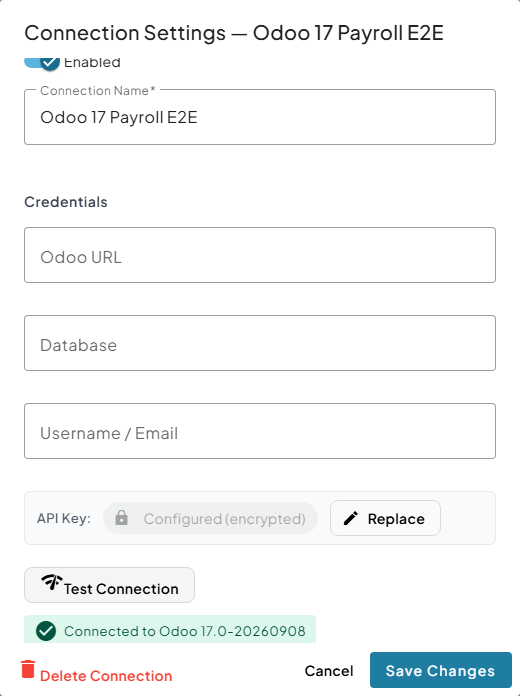

<meta charset="utf-8"/>
<section style="font-family: -apple-system, BlinkMacSystemFont, 'Segoe UI', Roboto, Arial, sans-serif; color: #2a3038; max-width: 960px; margin: 0 auto; padding: 24px 16px; line-height: 1.6;">
    <div style="text-align: center; margin-bottom: 28px;">
        
    </div>

    <div style="background: #f6f4ef; border: 1px solid #e5e2da; border-radius: 10px; padding: 24px; margin-bottom: 24px;">
        <h1 style="margin: 0 0 10px 0; font-size: 26px; color: #1f7da1;">Dawmly — Attendance &amp; Payroll for Egypt</h1>
        <p style="margin: 0 0 12px 0; font-size: 16px;">
            <strong>Dawmly</strong> is a cloud attendance, shift scheduling, leave, and payroll platform built for teams in Egypt and MENA.
            This free setup module (for <strong>Odoo 18.0</strong> Community &amp; Enterprise) prepares your Odoo Accounting database to receive payroll journal entries from Dawmly in one click.
        </p>
        <p style="margin: 0; font-size: 14px; color: #4b5563;">
            <strong>Requirements:</strong> This Odoo module is free (LGPL-3). Connecting your database to Dawmly requires a Dawmly company on the <strong>Growth plan or higher</strong> (company admins only), and your Odoo server must be reachable from the internet over a public <code>https://</code> URL.
        </p>
    </div>

    <div style="margin-bottom: 28px;">
        <h2 style="font-size: 20px; color: #1f7da1; border-bottom: 2px solid #e5e2da; padding-bottom: 6px; margin-bottom: 14px;">What This Module Does</h2>
        <p style="margin: 0 0 12px 0;">
            Open <strong>Invoicing / Accounting &rarr; Configuration &rarr; Dawmly Setup</strong> and click <strong>Set Up Dawmly Connection</strong>. The guided wizard performs three actions:
        </p>
        <ol style="margin: 0 0 16px 0; padding-left: 22px;">
            <li style="margin-bottom: 6px;">Creates (or reuses its own tracked) dedicated internal user <code>dawmly-connector</code> with least-privilege <strong>Billing</strong> access only (read chart of accounts and journals, create draft journal entries — no Settings or system rights) and a random unusable password.</li>
            <li style="margin-bottom: 6px;">Creates or reuses a <strong>Dawmly</strong> general journal (short code <code>DAWM</code>).</li>
            <li style="margin-bottom: 6px;">Revokes any prior API keys on <code>dawmly-connector</code>, generates a new persistent RPC API key, and shows it once.</li>
        </ol>
        <p style="margin: 0 0 10px 0;">
            The wizard then displays the <strong>four values</strong> with copy buttons ready to paste into <a href="https://app.dawmly.com/integrations" style="color: #1f7da1; font-weight: 600;">app.dawmly.com/integrations</a>:
        </p>
        <ul style="margin: 0 0 12px 0; padding-left: 22px;">
            <li><strong>Odoo URL</strong> (your public <code>https://</code> Odoo base URL)</li>
            <li><strong>Database</strong> (your Odoo database name)</li>
            <li><strong>Username</strong> (<code>dawmly-connector</code>)</li>
            <li><strong>API Key</strong> (shown once — copy it immediately)</li>
        </ul>
        <p style="margin: 0; padding: 12px 14px; background: #eef6f9; border-left: 4px solid #1f7da1; border-radius: 4px; font-size: 14px;">
            <strong>Draft journal entries only:</strong> Sync is one-way from Dawmly to Odoo. When you click <em>Post to Odoo</em> on an approved payroll run in Dawmly, Dawmly creates a balanced <strong>draft</strong> journal entry totalled per account and cost centre (never per employee). You review and post it inside Odoo.
        </p>
    </div>

    <div style="margin-bottom: 28px;">
        <h2 style="font-size: 20px; color: #1f7da1; border-bottom: 2px solid #e5e2da; padding-bottom: 6px; margin-bottom: 14px;">Screenshots</h2>
        <div style="margin-bottom: 18px;">
            <p style="margin: 0 0 6px 0; font-weight: 600;">1. Guided Setup Introduction</p>
            
        </div>
        <div style="margin-bottom: 18px;">
            <p style="margin: 0 0 6px 0; font-weight: 600;">2. Generated Credentials With Copy Buttons</p>
            
        </div>
        <div>
            <p style="margin: 0 0 6px 0; font-weight: 600;">3. Connected in Dawmly Integrations</p>
            
        </div>
    </div>

    <div style="margin-bottom: 32px; font-size: 14px; color: #4b5563;">
        <p style="margin: 0 0 6px 0;">
            <strong>Learn more:</strong> <a href="https://dawmly.com/features/odoo-integration/" style="color: #1f7da1;">https://dawmly.com/features/odoo-integration/</a>
        </p>
        <p style="margin: 0;">
            <strong>Support:</strong> <a href="mailto:hello@dawmly.com" style="color: #1f7da1;">hello@dawmly.com</a>
        </p>
    </div>

    <hr style="border: 0; border-top: 2px solid #e5e2da; margin: 28px 0;"/>

    <div dir="rtl" lang="ar" style="text-align: right; background: #f6f4ef; border: 1px solid #e5e2da; border-radius: 10px; padding: 24px;">
        <h2 style="margin: 0 0 10px 0; font-size: 24px; color: #1f7da1;">داوملى — الحضور والانصراف والرواتب لمصر</h2>
        <p style="margin: 0 0 12px 0; font-size: 16px;">
            <strong>داوملى</strong> منصة لإدارة الحضور والورديات والإجازات والرواتب لفرق العمل في مصر والشرق الأوسط.
            تساعد هذه الإضافة المجانية (لإصدار <strong>Odoo 18.0</strong> Community وEnterprise) على تجهيز قاعدة بيانات Odoo لاستقبال قيود الرواتب من داوملى بسهولة.
        </p>
        <p style="margin: 0 0 14px 0; font-size: 14px; color: #4b5563;">
            <strong>المتطلبات:</strong> الإضافة مجانية (LGPL-3)، لكن الربط مع داوملى يتطلب اشتراك الشركة في <strong>باقة النمو (Growth) أو أعلى</strong> (لمديري الشركة فقط)، مع إتاحة خادم Odoo عبر رابط <code>https://</code> عام على الإنترنت.
        </p>

        <h3 style="margin: 0 0 8px 0; font-size: 18px; color: #1f7da1;">ماذا تفعل الإضافة؟</h3>
        <p style="margin: 0 0 10px 0;">
            من قائمة <strong>الفوترة / المحاسبة &larr; التهيئة &larr; Dawmly Setup</strong> اضغط <strong>Set Up Dawmly Connection</strong> لتنفيذ ثلاث خطوات تلقائيًا:
        </p>
        <ol style="margin: 0 0 14px 0; padding-right: 22px;">
            <li style="margin-bottom: 6px;">إنشاء (أو إعادة استخدام) مستخدم مخصص باسم <code>dawmly-connector</code> بصلاحيات الفوترة فقط (قراءة الحسابات ودفاتر اليومية وإنشاء مسودات قيود اليومية دون أي صلاحيات إعدادات أو إدارة نظام) وبكلمة مرور عشوائية غير قابلة للاستخدام.</li>
            <li style="margin-bottom: 6px;">إنشاء أو إعادة استخدام دفتر يومية عام باسم <strong>Dawmly</strong> ورمز <code>DAWM</code>.</li>
            <li style="margin-bottom: 6px;">إلغاء أي مفاتيح API سابقة للمستخدم وتوليد مفتاح API دائم جديد وعرضه مرة واحدة فقط.</li>
        </ol>
        <p style="margin: 0 0 12px 0;">
            بعد ذلك تعرض الشاشة <strong>القيم الأربع</strong> مع أزرار نسخ لوضعها في صفحة التكاملات <a href="https://app.dawmly.com/integrations" style="color: #1f7da1; font-weight: 600;">app.dawmly.com/integrations</a>:
            <strong>رابط Odoo</strong>، و<strong>قاعدة البيانات</strong>، و<strong>اسم المستخدم</strong>، و<strong>مفتاح API</strong>.
        </p>
        <p style="margin: 0 0 14px 0; padding: 12px 14px; background: #eef6f9; border-right: 4px solid #1f7da1; border-radius: 4px; font-size: 14px;">
            <strong>قيود مسودة فقط:</strong> الربط باتجاه واحد من داوملى إلى Odoo. عند ترحيل دورة رواتب معتمدة ينشئ داوملى <strong>مسودة</strong> قيد يومية متوازن بإجماليات الحسابات ومراكز التكلفة (وليس لكل موظف)، وتراجعها وتؤكد ترحيلها بنفسك داخل Odoo.
        </p>
        <p style="margin: 0 0 6px 0; font-size: 14px; color: #4b5563;">
            <strong>دليل التكامل بالعربية:</strong> <a href="https://dawmly.com/features/odoo-integration/ar/" style="color: #1f7da1;">https://dawmly.com/features/odoo-integration/ar/</a>
        </p>
        <p style="margin: 0; font-size: 14px; color: #4b5563;">
            <strong>الدعم الفني:</strong> <a href="mailto:hello@dawmly.com" style="color: #1f7da1;">hello@dawmly.com</a>
        </p>
    </div>
</section>
